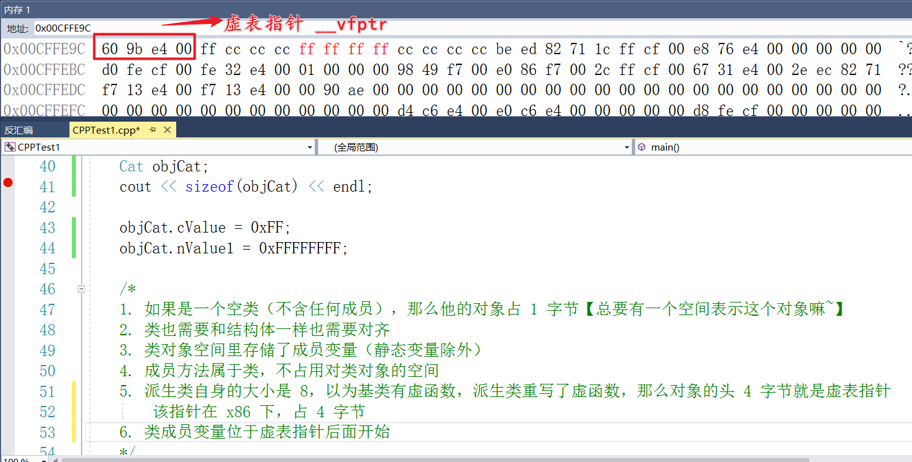
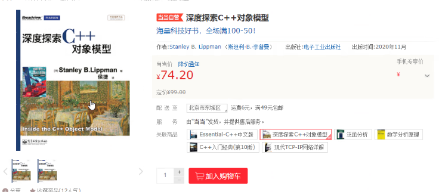
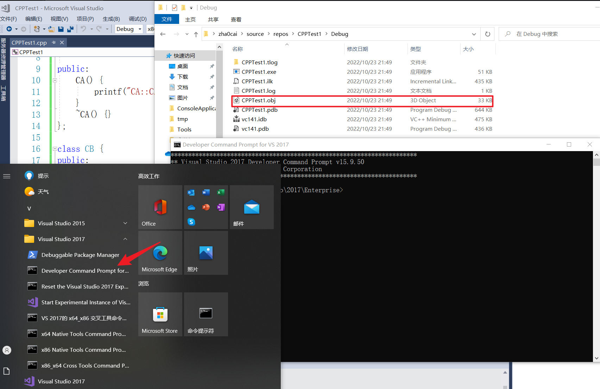

类空间
- 如果是一个空类（不含任何成员），那么他的对象占 1 字节【总要有一个空间表示这个对象嘛~】
- 类也需要和结构体一样也需要对齐
- 类对象空间里存储了成员变量（静态变量除外）
- 成员方法属于类，不占用对类对象的空间
- 派生类自身的大小是 8，以为基类有虚函数，派生类重写了虚函数，那么对象的头 4 字节就是虚表指针【该指针在 x86 下，占 4 字节】
类成员变量位于虚表指针后面开始

- ==指针的长度是根据当前所在进程决定的，x86 占 4 字节，x64 占 8 字节。==
#include <iostream>
using namespace std;
class Animal {
public:
char cValue;
int nValue1;
static int nValue2; // 静态变量属于类，不属于对象
public:
/*Animal() {
cout << "Animal 的无参构造函数被调用" << endl;
}
virtual ~Animal() {
cout << "Animal 的析构函数被调用" << endl;
}*/
void go() {
cout << "Animal go()" << endl;
}
};
// 程序的主函数
int main() {
Animal objAnimal;
cout << sizeof(objAnimal) << endl;
objAnimal.cValue = 0xFF;
objAnimal.nValue1 = 0xFFFFFFFF;
/*
1. 如果是一个空类（不含任何成员），那么他的对象占 1 字节【总要有一个空间表示这个对象嘛~】
2. 类也需要和结构体一样也需要对齐
3. 类对象空间里存储了成员变量（静态变量除外）
4. 成员方法属于类，不占用对类对象的空间
*/
system("pause");
return 0;
}
#include <iostream>
using namespace std;
class Animal {
public:
Animal() {
cout << "Animal 构造" << endl;
};
~Animal() {};
virtual void go() {
cout << "Animal go()" << endl;
};
};
class Cat : public Animal{
public:
char cValue;
int nValue1;
static int nValue2; // 静态变量属于类，不属于对象
public:
/*Cat() {
cout << "Cat 的无参构造函数被调用" << endl;
}
virtual ~Cat() {
cout << "Cat 的析构函数被调用" << endl;
}*/
void go() {
cout << "Cat go()" << endl;
};
};
// 程序的主函数
int main() {
Cat objCat;
cout << sizeof(objCat) << endl;
objCat.cValue = 0xFF;
objCat.nValue1 = 0xFFFFFFFF;
/*
1. 如果是一个空类（不含任何成员），那么他的对象占 1 字节【总要有一个空间表示这个对象嘛~】
2. 类也需要和结构体一样也需要对齐
3. 类对象空间里存储了成员变量（静态变量除外）
4. 成员方法属于类，不占用对类对象的空间
5. 派生类自身的大小是 8，以为基类有虚函数，派生类重写了虚函数，那么对象的头 4 字节就是虚表指针
该指针在 x86 下，占 4 字节
6. 类成员变量位于虚表指针后面开始
*/
system("pause");
return 0;
}
派生类继承
- 如果派生类是单继承，那么派生类的对象和基类对象地址一致，指向同一空间
- 如果派生类是多继承，那么派生类的对象和最左侧继承的基类对象地址一致【即第一个继承的~】
那么为什么地址相差是 4 呢？因为 CA 的大小是 4 字节。
基类 CB 的对象是位于派生类（基类 CA）对象地址 + 基类 CA 的空间大小
- 派生类自己的成员位于两个基类的空间之后
- 调用任意基类的继承函数时，
this 指针会自动调整回自己的类的对象空间内，CA 之所以和 CC 是一样的，实际原因是因为 CC 指向了对象头【CC 包含了 CA、CB（两个基类的内容）】 - 派生类重写基类函数后，调用的就是自己空间内的函数了，因此
this 指针不会再调整到基类的对象中。【可以看到 this 指针函数地址一致了】
#include <iostream>
using namespace std;
class CA {
public:
int a;
public:
CA() {
printf("CA::CA():%p\r\n", this);
}
~CA() {}
void goA() {
printf("CA::goA:%p\r\n", this);
}
};
class CB {
public:
int b;
public:
CB() {
printf("CB::CB():%p\r\n", this);
}
~CB() {}
void goB() {
printf("CB::goB:%p\r\n", this);
}
};
class CC : public CA, public CB{
public:
int c;
public:
CC() {
printf("CC::CC():%p\r\n", this);
};
~CC() {};
void goC() {
printf("CC::goC:%p\r\n", this);
}
void goB() {
printf("CC::goB:%p\r\n", this);
}
};
// 程序的主函数
int main() {
cout << sizeof(CA) << endl;
cout << sizeof(CB) << endl;
cout << sizeof(CC) << endl;
CC objCc;
objCc.goA();
objCc.goB();
objCc.goC();
//objCat.cValue = 0xFF;
//objCat.nValue1 = 0xFFFFFFFF;
system("pause");
return 0;
}
4
4
12
CA::CA():004FF820
CB::CB():004FF824
CC::CC():004FF820
CA::go:004FF820
CB::go:004FF824
CC::go:004FF820
请按任意键继续. . .
----------
4
4
12
CA::CA():00F7F9A0
CB::CB():00F7F9A4
CC::CC():00F7F9A0
CA::goA:00F7F9A0
CC::goB:00F7F9A0
CC::goC:00F7F9A0
请按任意键继续. . .
构造函数
《深度探索 C++ 对象模型》 -- 侯捷（译）

默认构造函数出现的时机
默认情况
#include <iostream>
using namespace std;
class CA {
public:
int a;
public:
CA() {
printf("CA::CA():%p\r\n", this);
}
~CA() {}
};
class CB {
public:
int b;
public:
void testB() {
printf("CB::testB()\r\n");
}
};
// 程序的主函数
int main() {
CB objCb;
system("pause");
return 0;
}

- 默认构造函数在需要的情况下才会生成，否则不会，非必然的。
-
CB::CB() - 前面讲过每个 CPP 文件都会编译生成一个中间文件
obj/o 打开 Visual Studio 2017 Developer Command Prompt v15.9.50
********************************************************************** ** Visual Studio 2017 Developer Command Prompt v15.9.50 ** Copyright (c) 2017 Microsoft Corporation ********************************************************************** C:\Tools\Microsoft Visual Studio\2017\Enterprise>cd C:\Users\zha0cai\source\repos\CPPTest1\Debug C:\Users\zha0cai\source\repos\CPPTest1\Debug>dumpbin /ALL CPPTest1.obj > test.cpp导出
CPPTest1.obj 文件并搜索，并不能找到CB::CB 说明并没有产生默认构造函数- COFF（common object file format）
有内部类、继承
在 CB 中添加一个内部类 CA，重复上述步骤，可以搜索到
CB::CB ，证明生成了CB::CB() 默认构造函数。#include <iostream> using namespace std; class CA { public: int a; public: CA() { printf("CA::CA():%p\r\n", this); } ~CA() {} }; class CB { public: CA objCA; int b; public: void testB() { printf("CB::testB()\r\n"); } }; // 程序的主函数 int main() { CB objCb; system("pause"); return 0; }
有虚函数、虚基类
- 有虚函数就有虚函数表，对象的头四个字节指向虚函数表
- 编译器会给对象生产一个默认构造函数，并添加代码，使得前四个字节指向虚函数表
#include <iostream>
using namespace std;
class CA {
public:
int a;
public:
CA() {
printf("CA::CA():%p\r\n", this);
}
~CA() {}
};
class CB {
public:
//CA objCA;
int b;
public:
virtual void testB() {
printf("CB::testB()\r\n");
}
};
// 程序的主函数
int main() {
CB objCb;
system("pause");
return 0;
}